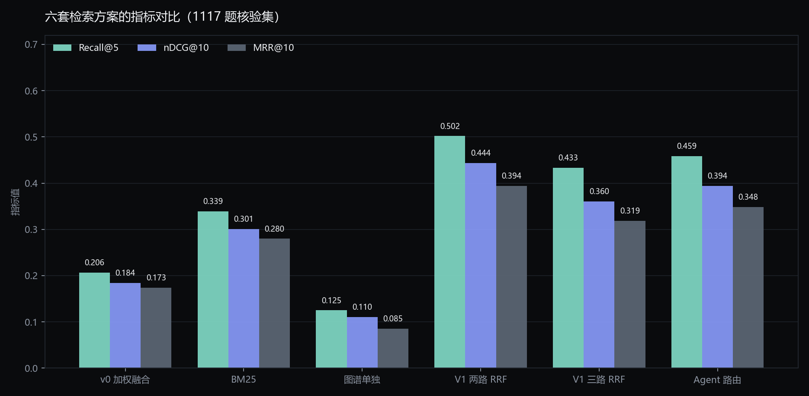

PROJECT 01RAG个人项目
具身智能领域离线证据检索系统
BM25 + 稠密向量 + 知识图谱三路召回，RRF 融合与证据充分性门控
面向具身智能领域的证据检索：在完全离线、不依赖真机与外部 API 的条件下， 对论文、机器人手册、实验记录做可溯源检索作答。核心是让「召回」和「不编造」两件事同时可测量。
- 三路召回：jieba + 标准 BM25、bge-m3 稠密向量（FAISS）、LLM 抽取三元组构建的知识图谱
- 加法式路由：基础两路常开，命中英文大写词或重复中文专名时再叠加图谱路，规则可单测
- 门控拒答：LLM 判证据是否充分，不足直接拒答，无答案题正确拒答率 87.5%
- 评测流水线：QA 合成 → LLM-judge 核验 → 分层划分，Recall / nDCG / MRR 全量可复算
RESULT · 六套方案对比

1117 题核验集：两路 RRF 相比 v0 把 Recall@5 从 0.206 提到 0.502